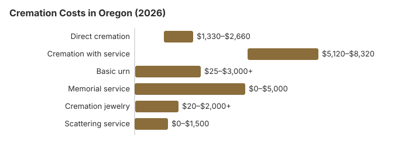

Cremation Costs in Oregon (2026)
About 78% of Oregon deaths end in cremation, by the rate we use, so for most families the question is which kind. Our estimate puts direct cremation at about $1,900 here, compared with about $8,200 for a full traditional funeral. This page sets out Oregon cremation prices, the permit rules, the state's program for unclaimed bodies, and what the law asks of a family scattering ashes at sea.
Oregon Cremation Arrangements
Direct Cremation
- The lowest-cost choice on an Oregon price list
- No visitation or funeral beforehand
- Taken by the provider to the crematory
- Relatives receive the ashes
- Relatives can plan a gathering afterwards
Cremation with Service
- Cremation follows a funeral service
- Relatives may view the body first
- Service in a chapel, church or funeral home
- The price often covers a simple urn
- Closest to a traditional funeral
Oregon Cremation Costs by Item
| Line item | Oregon estimate | From - to |
|---|---|---|
| Direct cremation | $1,900 | $1,330 – $2,660 |
| Cremation with service | $6,400 | $5,120 – $8,320 |
| Basic urn | $50 – $300 | $25 – $3,000+ |
| Memorial service | $500 – $2,000 | $0 – $5,000 |
| Cremation jewelry | $50 – $500 | $20 – $2,000+ |
| Scattering service | $200 – $600 | $0 – $1,500 |
About the Oregon numbers: our model produced them; they were not gathered from Oregon crematories, so do not read them as a quote or as professional advice. Read our method for how we build them, and the disclaimer.
State sources: board; ORS 97.170; Oregon Indigent Disposition Program guide.

Questions for an Oregon Crematory
Put these questions to any Oregon provider:
- Ask for the General Price List before agreeing to anything. The direct cremation line has to say what it includes, and in Oregon that should be transport, the cremation and a simple container for the ashes.
- No casket is needed. Under 16 CFR 453.3(b) of the FTC Funeral Rule, an Oregon direct cremation provider must allow a simple wooden box, or any other alternative container, in place of a casket.
- Find out how many days the crematory usually needs once the permit is issued, and whether the price covers delivering the ashes or only pickup.
Scattering Ashes off the Oregon Coast
Ashes can be scattered in the Pacific, but the EPA's burial-at-sea rule sets two conditions: the scattering has to take place at least three nautical miles from shore, and it has to be reported to the EPA within 30 days. If you hire a boat or a scattering service, ask for the price in writing and whether it includes filing that report for you, since the family is otherwise responsible for it.
Cremation Resources
- Funeral Consumers AllianceNonprofit advocacy: compare cremation providers
- Cremation Jewelry GuideMemorial keepsakes and remembrance options
- Cremation vs. Burial CostsSide-by-side cost comparison
- Pet Cremation CostsOptions and prices for pet cremation and memorials
- Final Expense InsuranceCoverage options to help pay for cremation costs
Compare Funeral Costs
- Average Funeral Cost in 2026National cost breakdown with real prices
- Cremation vs. Burial Cost ComparisonSide-by-side price comparison to help you decide
- Funeral Cost BreakdownEvery line item explained: know what you're paying for
- Cheapest Funeral OptionsLower-cost alternatives, with typical price ranges
- Direct Cremation: Most Affordable OptionNFDA 2023 median $2,645 with a family-supplied container (latest available)
- How to Compare Funeral PricesStep-by-step guide to getting the best price
Spending Less on an Oregon Cremation
Ways Oregon families keep cremation costs down:
- Compare price lists. Ask at least three Oregon providers for their written General Price Lists and set the direct cremation lines side by side.
- Look at flat-rate providers. Some Oregon providers, especially around Portland, sell direct cremation at one published price. There is usually little room to bargain with them, so compare how quickly each works and what the price includes.
- Scatter instead of buying a niche. The choices include private land with the owner's permission, the ocean under the EPA rule, national forests with a free permit, and the Oregon state parks that allow it.
Frequently Asked Questions
What will an Oregon cremation cost?
In Oregon, our estimate is about $1,900 for direct cremation, which includes transport, the cremation and returning the ashes, and about $6,400 for cremation with a ceremony.
Which cremation options do Oregon providers offer?
Direct cremation, with no service, and cremation with a memorial or viewing are the usual choices. Oregon law also recognizes alkaline hydrolysis, or water cremation, defining it as a form of reduction done in a licensed hydrolysis facility (ORS 97.010); ask a provider whether it offers it and how the price compares with flame cremation. With no minimum waiting period, the paperwork sets the timing, and the permit rules are under Timing and permits below.
What rules apply to cremation in Oregon?
Oregon sets no minimum wait, yet the crematory still needs the death certificate, a cremation permit, and a signed authorization from the next of kin or a designated agent before it can go ahead. The statute on timing, the rule on funeral directors and the board's phone number are in the rules section near the end of this page.
Where may Oregon families scatter ashes?
The rules depend on where. Private land needs the owner's agreement, public land and parks set their own conditions, and scattering at sea must follow the EPA's three-mile rule. Plenty of Oregon families instead place the urn in a columbarium niche or a grave, while others keep a little of the ashes in a piece of jewelry.
Why is cremation the usual choice in Oregon?
About 78% of Oregon families choose cremation, 14.6 points above the 63.4% national rate NFDA projected for 2025. Price is part of the reason: by our estimate cremation costs about $6,300 less than a traditional burial here, and it leaves the family free to hold a memorial whenever it suits them.
How long does an Oregon cremation take?
Most Oregon cremations are finished 4 to 10 days after death. Direct cremation, at $1,900, is quickest because nothing has to be scheduled first; the wait is mainly for the cremation permit, since Oregon sets no fixed waiting period (ORS 432.158).
Can a service be held before an Oregon cremation?
Yes. A viewing or funeral can come first, often with a rented casket. There is no legal waiting period to plan around; the medical certifier's authorization and the disposition permit usually decide how soon the cremation can follow.
More for Oregon
Oregon's disposition authorization and 24-hour notice
Oregon handles cremation clearance through the death paperwork rather than a separate medical examiner review. Whoever first takes possession of the body, a funeral service practitioner or a family member acting as one, must notify the county registrar within 24 hours, and before cremation must get written authorization for final disposition from the doctor, nurse practitioner, physician assistant or medical examiner who certifies the cause of death. If written sign-off cannot be had in time, the certifier's oral consent can be recorded on the state form instead (ORS 432.158; checked October 29, 2026).
The crematory then checks the paperwork against the body. The Oregon Mortuary and Cemetery Board's crematory checklist requires the signed final disposition permit, an ID tag fixed to the container rather than the file, and the cremation authorization signed by the person with the right to control disposition before the crematory accepts the remains.
Oregon's cremation regulator and the indigent disposition program
Crematories and the funeral homes that sell cremation in Oregon answer to the Oregon Mortuary and Cemetery Board (971-673-1500). The board has eleven volunteer members appointed by the Governor, seven from the death care industry and four from the public, and it pays its way through licensing, examination and death record filing fees.
Families in Oregon can deal with a crematory themselves once the permit is issued; the Funeral Consumers Alliance does not count Oregon among the nine states that restrict family-directed care.
There is no waiting period before cremation, but the medical certifier or medical examiner has to authorize final disposition, and a disposition permit is required (ORS 432.158).
When no one claims the body
If a body goes unclaimed, the funeral home may cremate it as the least costly method and then claim $550 from the board's Indigent Disposition Program (ORS 97.170). (Source: ORS 97.170; Oregon Indigent Disposition Program guide.) For a family arranging the cremation itself, the $255 Social Security death payment to a qualifying spouse or child would pay only part of the $1,900 direct cremation estimate.
Veterans keep their national cemetery benefit after cremation, with the niche or plot and the marker free. Oregon has Willamette National Cemetery (503-273-5250), Eagle Point National Cemetery (541-826-2511) and Fort Stevens National Cemetery (503-273-5250); see cem.va.gov.
Checklist for an Oregon cremation
- Ask whether death certificates and the permit fee are in the quoted price or billed on top.
- Find out who signs the permit in the county where the death happened, and how many days it takes.
- Remember that the $550 program payment goes to the funeral home, and only after the ORS 97.170 notice process.
- Call the board at 971-673-1500 before paying if a provider's prices are unclear.